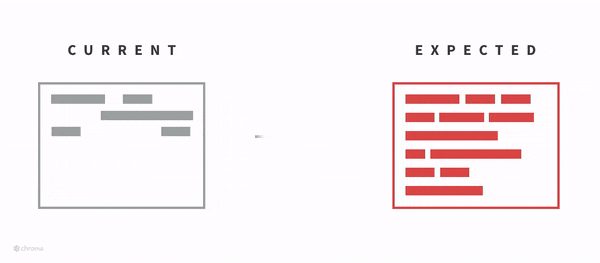

Testing React Components with Storybook.js
by Axel Simms
About Me
- @aaxelgon
- I enjoy building for the web
- I work at Hubspot
- ❤️ the outdoors, the indoors, anything space related (Star Trek, The Expanse), metal, trap, crafting, and writing
HubSpot
- our lovely sponsors!
- building things for the web to help other build things for the web
- https://cutt.ly/cms-eng
- https://cutt.ly/cms-dev
What Is Storybook.js?
a UI development tool for designing and developing components in an isolated environment
Why Is That Important?
- living style guide
- easily test different cases (states)
- visually inspect components
Development Processes
Why test?
- consistency is key to design
- broken things are undesirable to users
- testing is necessary when pushing a lot of code
- QA processes
- CI/CD
Test Driven Development (TDD)
converting requirements into tests and ensuring that those tests pass
Behavior Driven Development (BDD)
TDD, but testing is focused on the end behavior of the system from the users' perspective
Component Driven Development (CDD)
- development is focused on building components and composing them into larger structures
- influenced by Atomic Design (Brad Frost)
Storybook Driven Development (SDD)
- also known as Style Guide Driven Development, Visual TDD
- write stories as tests and use visual testing during development
UI Testing
Structural Testing
- Storyshots addon
- Can be used for visual regression testing, but only with inline code
Interaction Testing
- Storybook actions
- Enzyme
- specs
Automated Visual Regression Testing
- Loki
- BackstopJS
- Jest + Puppeteer
Resources
- https://github.com/hakimel/reveal.js
- https://github.com/component-driven/awesome-list
- https://www.youtube.com/watch?v=JjXnmhNW8Cs